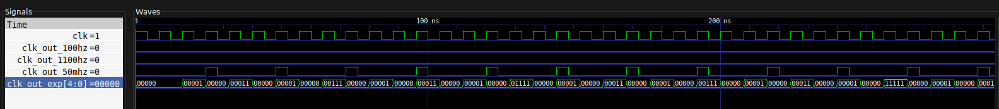

Systemy wbudowane, Laboratorium
Elementem koordynującym współpracę wielu niezależnych elementów w systemie, a także umożliwiającym realizację jego zadań w perspektywie czasu jest zegar. Generuje on tzw. podstawę czasu systemowego — np. zegar 50 MHz określi podstawową jednostkę czasu używaną przez procesor na 20ns ( sek.)
Dla różnych podzespołów systemu jednak stawia się różne wymagania dotyczące zegara. Chciałoby się, by procesor wykonywał obliczenia jak najszybciej (najszybszy zegar), ale transmisje muszą być realizowane wolniej, m. in. ze względu na pewność przesyłu. Jednym ze sposobów radzenia sobie z tym problemem jest integracja różnych zegarów w jednym systemie, co jest praktykowane, lecz niesie za sobą potrzebę ich wzajemnej synchronizacji. Drugim podejściem jest zwielokrotnianie (tj. wydłużanie okresu) albo dzielenie (taktowanie układu jeszcze szybciej) podstawy czasu.
Zajmijmy się spowalnianiem zegara. Służą do tego dzielniki częstotliwości. Na dzisiejszych zajęciach zbudujesz (napiszesz) taki dzielnik. Jest to bardzo prosty układ: na wejściu przyjmuje oryginalny zegar oraz parametr zawierający informację o żądanych parametrach zegara wyjściowego (dzielnik). Na wyjściu generuje impuls zegarowy odpowiednio spowolniony względem zegara wejściowego. Weźmy pod uwagę powyższy zegar 50 MHz. Jeśli potrzebujemy zegar 1 MHz, jaki parametr dzielnika jest potrzebny? Oczywiście, na każde 50 taktów zegara głównego wygenerujemy jeden takt zegara spowolnionego. Czyli wystarczy zliczyć 50 taktów zegara głównego i odwrócić sygnał zegara spowalnianego!
A co, gdy potrzebujemy zegara 40 Hz? To bardzo znaczne spowolnienie: każdy takt wyjściowy to 1 250 000 taktów głównych! Widać zatem, że dzielnik częstotliwości oprócz parametru „przez ile dzielić” musi być również parametryzowany rozmiarem licznika, który będzie wewnętrznie zliczał impulsy. (Przypomnij sobie pragmę
generic!)Jest jeszcze jeden problem: przypomnij sobie wykład o UART i precyzji zegarów nadajnika i odbiornika. Problem wynika z tego, że częstotliwość zegara głównego możemy dzielić tylko przez dzielnik będący liczbą całkowitą. A zatem z zegara 1 MHz nie wygenerujemy w ten sposób zegara o częstotliwości (chociaż to taka okrągła wartość…).
Kompilacja wszystkich programów:
make buildUruchomienie danego programu:
make r=programgdzie program to jeden z:
clock_divider,clock_divider_tb.Uruchomienie programu oraz wygenerowanie pliku do odczytu przy pomocy programu GTKWave:
make wave-quiet r=programUruchomienie programu, wygenerowanie pliku do odczytu, oraz uruchomienie programu GTKWave:
make wave r=programNapisz kod dzielnika częstotliwości.
- Zbuduj test dla dzielnika; główny zegar w teście ma częstotliwość 125 MHz.
- Zainicjuj trzy instancje dzielnika o najmniejszych możliwych rozmiarach (w rozumieniu liczby bitów), generujące przebiegi 100 Hz, 1.1 kHz oraz 50 MHz.
Korzystając z podglądu przebiegów na GTKWave, oblicz w procentach niedokładności generowanych przebiegów.
Kod programu symulującego dzielnik częstotliwości znajduje się w pliku clock_divider.vhd.
W pliku clock_divider_tb.vhd znajduje się program testowy implementujący przypadki podane w zadaniu.
| Oczekiwana cz. | zaobserwowany okres | faktyczna cz. | błąd względny |
|---|---|---|---|
| 100Hz | 10ms | 100Hz | |
| 1100Hz | 909096ns | 1099.99… Hz | |
| 50MHz | 24ns | Hz |
Napisz kod dzielnika częstotliwości, który będzie miał wyjść ( jest określane pragmą
generic), z których -te wyjście (licząc od ) będzie zegarem o okresie razy dłuższym niż zegar podstawowy.
Kod programu znajduje się w pliku clock_exp_divider.vhd.
Jego wyniki są widoczne w programie GTKWave razem z wynikami z zadania 1.
Przykład dla N = 5:

Oczywiście, jeszcze prostszym układem symulującym takie zachowanie byłby zwykły licznik binarny, który zwiększa swoją wartość o jeden za każdym sygnałem zegara oryginalnego.